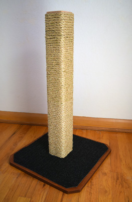

How to Build a Cat Scratcher
Welcome
The purpose of this website is to provide instructions for building a cat scratcher as pictured to the right. There are two important reasons to build your own cat scratcher.
- Cats need to scratch.
- Most commercial cat scratchers are not tall enough or sturdy enough for your cat's needs.
